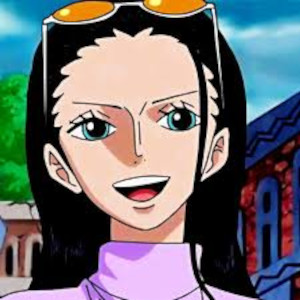

Clique sobre um personagem para saber mais informações sobre ele
Luffy é neto de Monkey D. Garp, Vice-Almirante da Marinha e arqui-inimigo de Gol D. Roger, que fez história no
mundo como o Rei dos Piratas e o dono original do tesouro One Piece. Ainda assim, desde jovem Luffy quis
seguir os passos dos piratas que admirava, como Shanks e o próprio Roger.

Roronoa Zoro, também conhecido como "Caçador de Piratas" Zoro, é o combatente dos Piratas do Chapéu de Palha e
um ex-caçador de recompensas.
Ele foi o primeiro membro a juntar-se à tripulação e é um dos quatro melhores lutadores da tripulação, ao lado
de Luffy, Sanji e Jinbe, e seu sonho é se tornar o maior espadachim do mundo
"Perna Preta" Sanji, nascido como Vinsmoke Sanji, e também é o cozinheiro dos Piratas do Chapéu de Palha, assim
como
um antigo chefe de cozinha do Baratie.
Nico Robin, também conhecida como "Criança Demônio" e "Luz da Revolução", é a arqueóloga dos Piratas do Chapéu
de
Palha. Ela é a única sobrevivente da ilha destruída de Ohara, localizada no West Blue. Como resultado, ela é
atualmente a única pessoa no mundo com a capacidade de ler e decifrar Poneglyphs, uma habilidade que é
considerada
proibida e que ameaça o Governo Mundial.

A "Gata Ladra" Nami é a navegadora dos Piratas do Chapéu de Palha. Ela foi o terceiro membro da tripulação e a
segunda a entrar, fazendo-o durante o Arco Orange Town. Ela é a irmã adotiva de Nojiko, desde que as duas
ficaram
órfãs e foram levadas por Bell-mère.
Tony Tony Chopper é uma rena. Ele é o médico da tripulação dos Piratas do Chapéu de Palha. Chopper é uma rena
que,
após comer a Hito Hito no Mi, adquiriu a habilidade de se transformar e raciocinar como os humanos.Ele é o sexto
membro e um dos poucos membros da tripulação que nasceu na Grand Line, numa ilha chamada Drum.
"God" Usopp é o Atirador dos Piratas do Chapéu de Palha. Ele é o quarto membro da tripulação e o terceiro a
entrar,
fazendo isso no final do Arco Vila Syrup. Embora ele tenha deixado a tripulação durante o Arco Water 7, ele se
juntou novamente ao final do Arco Pós-Enies Lobby.
Brook é o Músico dos Piratas do Chapéu de Palha. Ele é um esqueleto que os Chapéus de Palha encontraram a bordo
de
um navio fantasma depois de entrarem no Triângulo Florian. Ele é um usuário de Akuma no Mi que comeu a Yomi Yomi
no
Mi, o que o torna um pseudo-imortal por causa de seus poderes. Ele é o nono membro do Bando do Chapéu de Palha,
e o
oitavo a se juntar à tripulação de Luffy.